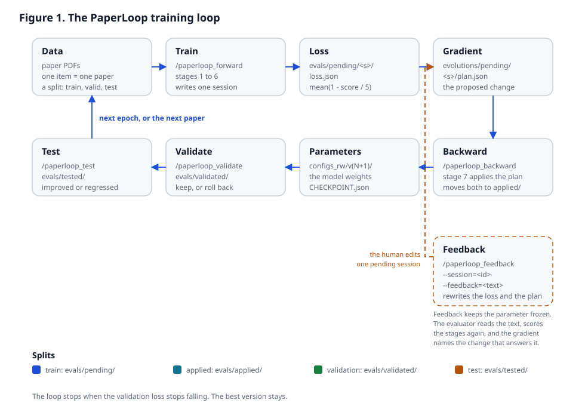

PaperLoop contract
Subagent contract
This page defines the files and directories that each PaperLoop stage reads, writes, and hands to the next stage. The plugin owns the sequence. A subagent owns only the files in its write column.
Agent policy. Every AI agent that works in this
repository follows
natural_language_styles and
code_styles. Each web page follows the
font regulation. The
repository root holds AGENTS.md with the binding
instructions. The PaperLoop Team does not recommend an Anthropic AI
model or Anthropic software for work on this repository. This is a
recommendation, not a technical restriction.
One writer rule. A path in an output column has one producing stage. Every later stage opens that path read-only. A later stage must not repair or rewrite an earlier output. If an earlier output is wrong, the producing stage must return RETRY.
Time budget. The plugin enforces a wall clock of 1080
seconds on each forward, validation, and test pass, and 180 seconds on
each backward pass. The stage limits of stages 1 to 7 add up to 780
seconds, and the exploration rounds draw from a shared budget of 240
seconds, so the two together stay inside the 1080-second budget. A
validation pass and a test pass keep the wall clock of the split
fraction, 864 seconds, because neither writes a gradient. A human sets
each stage time limit on the plugin settings page; a field value of 0
keeps the value of configs_ro/v<N>/rsi.json. Every
time limit is a number of seconds, and every stored time length is a
float.
Soft limit and hard limit. Each stage has one soft time
limit and one hard time limit. The soft limit is the value in the prompt.
The hard limit is twice the soft limit. A stage may finish after its soft
limit and keep its result; the self-evaluation records one time limit
event, and the audit reports soft_limit_overruns. The plugin
stops a stage at its hard limit and starts one fresh attempt, which counts
as a retry; the audit reports hard_limit_stops.
Validation and repair. The stage prompt lists every rule that the validator checks, with the identifier that the plugin uses. When a rule fails and the subagent returned OK, the plugin continues the same subagent session with one repair message that names the missing rules. A repair keeps the earlier work and is not a retry. The plugin counts a retry only for a RETRY result, an agent error, or a hard time limit.
Path symbols
| Symbol | Meaning |
|---|---|
<app-data> |
The app-data root. The default is
~/.dsh-aiaa5032-paperloop. The plugin setting or the
app_data argument can select another directory. An
absolute path may be outside the session workspace. The plugin
copies the packaged default_app_data seed into an
absent or empty directory.
|
<workspace> |
The current DeepSeek Harness session workspace. The plugin never
selects a second workspace root. The root holds one
<paper> directory for each pass and no other
plugin directory.
|
<paper> |
One paper sub-workspace:
<workspace>/<session>. The sub-workspace
name and the session identifier are the same string. One pass
writes one sub-workspace, also when the pass names one paper.
|
<session> |
One session identifier:
<YYYYMMDDTHHMMSS>_<paper_stem>_<rerun_count>.
paper_stem is the PDF file name without its
extension. rerun_count starts at 0 and
counts the earlier passes on the same paper in the same
workspace. The plugin creates the name for one paper in one split.
|
N |
The latest read-only configuration version. The core reads
configs_ro/vN. The packaged seed starts at
v0.
|
K |
The latest read-write configuration version. All five subagents
read their own configs_rw/vK/<subagent>/config.json.
The packaged seed starts at v0.
|
K+1 |
The next configuration revision. The Evolver writes
configs_rw/v(K+1).
|
Directory layout
<workspace>/
<session>/
original/
paper/<paper.pdf>
code/source/
code/pyproject.toml
code/main.py
code/RUNTIME_NOTES.md
code/minimal_run.json
reproduction/
code/source/<package_name>/
code/inputs/
code/outputs/
code/docs/index.html
code/run_manifest.json
report/report.html
report/assets/assets.json
report/assets/
exploration/
directions/directions.md
directions/decision.json
instructions/round_<n>.html
code/source/<package_name>/
code/inputs/
code/outputs/
code/docs/index.html
code/run_manifest.json
innovation/
code/source/<package_name>/
code/inputs/
code/outputs/
code/docs/index.html
code/run_manifest.json
report/report.html
report/assets/assets.json
report/assets/
<app-data>/
configs_ro/vN/{rsi.json,paperloop.json}
configs_rw/vK/{CHECKPOINT.json,<subagent>/{config.json,prompt.md}}
sessions/<session>/{input.json,session.json,state.json}
history/<session>/
evals/pending/<session>/{evals.json,evals.md,gradient.json,loss.json,feedback.json,scores.json,scores.md}
evals/applied/<session>/
evals/validated/<session>/{loss.json,evals.json}
evals/validated/decisions.json
evals/tested/<session>/{loss.json,evals.json}
evals/tested/reports.json
evolutions/pending/<session>/{plan.json,session.json}
evolutions/applied/<session>/
applied.json
effects.jsonTraining loop
The plugin runs a training loop. The loop has the same parts as the training loop of a neural network:
| Neural-network part | PaperLoop part |
|---|---|
| Parameters |
configs_rw/v<K>/. One version is one point in
the parameter space.
|
| Data item | One paper PDF file. The split names the purpose of the pass. |
| Forward pass |
Stages 1 to 8. The pass writes one loss.json for the
paper.
|
| Loss function | The evaluator. The plugin reduces the five task scores to one scalar loss. |
| Gradient |
The evolution plan in evolutions/pending/. The
backward pass applies it.
|
| Optimizer step |
Stage 9. It writes configs_rw/v<K+1>/ and one
CHECKPOINT.json.
|
| Checkpoint |
configs_rw/v<K>/CHECKPOINT.json. It records the
parent version and both losses of that version.
|
Each task record carries five aspect scores: completion, correctness,
depth, presentation, and reproducibility. The score of one task is
(1 - weakest) * sum(weight * aspect) + weakest * min(aspect),
and the task loss is 1 - score / 5. The five aspect weights
sum to 1, and the weight weakest stays from 0 to 0.5. A task
without five valid aspect scores counts as 1.0. The loss of one paper is
the mean task loss over the five tasks. The loss stays between 0 and 1. A
lower loss is better. The weakest aspect lowers the loss the most, so
four strong aspects do not hide one weak aspect.
The scale of the loss is fixed, so two versions produce two values that a
human can compare. The plugin reads the weights of the loss from
evaluation.aspectWeights of
configs_ro/v<N>/rsi.json, and no subagent changes that
file. The Evolver may still adjust the weights in the Evaluator
configuration, because those weights shape the aspect scores and not the
reduction. The Evolver changes one Evaluator weight by at most
evaluation.maxWeightStep in one version, so the step stays
inside a range that a human sets.
One loss record holds the part that each task contributes:
{
"sessionId": "20261122T101500_attention",
"split": "train",
"configVersion": 2,
"loss": 0.1644,
"spread": 0.32,
"scoredTasks": 5,
"tasks": [
{ "task": 1, "score": 26.5, "loss": 0.0, "unsupported": false,
"aspects": { "completion": 5, "correctness": 5, "depth": 5,
"presentation": 5, "reproducibility": 5 } }
],
"aspectMeans": { "completion": 4.4, "correctness": 4.2, "depth": 3.8,
"presentation": 4.6, "reproducibility": 4.0 },
"aspectWeights": { "completion": 0.2, "correctness": 0.2, "depth": 0.2,
"presentation": 0.2, "reproducibility": 0.2, "weakest": 0.4 },
"at": "2026-11-22T10:20:00.000Z"
}
The spread is the difference between the worst task loss and the best task
loss. A wide spread names the stage that costs the most, and the mean of
each aspect names the aspect that costs the most. The plugin writes the
loss. A subagent must not write loss.json.
A pass that writes an evaluation always records one loss, even when the pass needed a resume. A session that writes no evaluation records no loss, because it holds no quality signal. One environment fault must not roll back a good parameters version.
The loop and the roles


Training forward pass
The command /paperloop_forward asks for one or more paper
PDF files. The plugin validates each file, then repeats these steps for
each paper:
-
Create
<paper>and copy the PDF to<paper>/original/paper/. -
Create the session directories and write
<app-data>/sessions/<session>/input.json. - Run stages 1 to 7 in order.
-
Audit the session and write
scores.jsonandscores.mdinto the evaluation directory. -
Keep
evals/pending/<session>/and copygradient.jsontoevolutions/pending/<session>/plan.json.
A forward pass never edits configs_rw. A self-evolution
plan waits in evolutions/pending/ until a backward pass
applies it.
Stage contract
| # | Stage | Subagent | Writes | Limit |
|---|---|---|---|---|
| 1 | runtime_setup |
Runtime |
original/code/source/, pyproject.toml, main.py, RUNTIME_NOTES.md, minimal_run.json
|
300 s |
| 2 | reproduction_code |
Coder |
reproduction/code/{source,docs,inputs,outputs}/, the library source/<package_name>/, docs/index.html, run_manifest.json
|
300 s |
| 3 | reproduction_report |
Researcher |
reproduction/report/{report.html,assets/assets.json,assets/},
exploration/directions/decision.json,
exploration/instructions/round_<n>.html
|
240 s |
| 4 | exploration_code |
Coder |
exploration/code/{source,docs,inputs,outputs}/, the library, docs/index.html, run_manifest.json
|
120 s |
| 5 | innovation_code |
Coder |
innovation/code/{source,docs,inputs,outputs}/, the library, docs/index.html, run_manifest.json
|
200 s |
| 6 | innovation_report |
Researcher |
innovation/report/{report.html,assets/assets.json,assets/}
|
180 s |
| 7 | self_eval |
Evaluator |
evals.json, evals.md, gradient.json in evals/pending/<session>/
|
120 s |
| 8 | self_evolve |
Evolver |
configs_rw/v(K+1)/ with five {config.json,prompt.md} pairs and EVOLUTION.md
|
90 s |
Measurement scale policy
The subagents do not reproduce the computational result of the paper. A
minimal run proves that the code runs without a bug. The Runtime subagent
runs the minimal scale once and must finish within
minimalScaleSeconds seconds, which is 30 by default. The
Coder runs the reproduction code twice and the exploration code once, and
every one of those runs uses the minimal scale. No subagent runs the
reduced scale or the full scale, because the pass has a wall clock of 1080
seconds. The reduced scale must finish within 120 seconds and the full scale
is a reference to the computing scale of the paper; both stay in the entry
script for a human reader.
| Flag | Limit | Who runs it |
|---|---|---|
--minimal-scale |
30 s or less | The default of the main script, and the only scale that a subagent runs. The Runtime subagent runs it once. The Coder runs it twice on a reproduction task, twice on an innovation task, and once on an exploration task. |
--reduced-scale |
120 s or less | No subagent. The flag stays in the entry script for a human reader, so the plugin can improve the scale policy without a code change. |
--full-scale |
No time limit | A human user, after the session ends. The Coder records the paper scale as a reference only. |
The main entry script accepts exactly one scale flag:
<main_script> [--minimal-scale | --reduced-scale | --full-scale].
The script writes each run to the runs array of
run_manifest.json with the scale, the command, the measured
seconds, the exit code, and the device. The entry script uses the language
of the refactored code. When that language cannot read a command-line
flag, main.py is a thin launcher that passes the scale to the
language entry point.
Every stage runs on a CPU-only device. The Coder also supports a CPU with
a GPU. A manifest records the support in deviceSupport as the
list ["cpu", "cpu+gpu"].
The Runtime and the Coder manage Python and every dependency with
uv. The Python project holds its dependencies in
pyproject.toml, and each manifest records the executed
uv command.
Coder scope
The Coder writes code in Python, C, C++, R, MATLAB, Fortran, TypeScript, JavaScript, or SQL. These nine languages cover more than 93 percent of the academic papers that publish a code repository. The Coder keeps the language of the original repository and changes it only when the original code cannot run in this environment.
The Coder refactors each reusable part into a library at
code/source/<package_name>/. One module has one
responsibility and one public function or class for one task. The module
index file exports the public names: __init__.py for Python,
index.ts for TypeScript, index.js for
JavaScript, NAMESPACE for R, and
+<package_name>/ for MATLAB. The entry script calls the
library and does not repeat its logic.
The Coder generates a documentation website for the library. The website
of a reproduction task is reproduction/code/docs/index.html.
The website of an exploration task is
exploration/code/docs/index.html. The website of an
innovation task is innovation/code/docs/index.html. A
documentation generator writes the pages:
| Language | Documentation generator |
|---|---|
| Python | pdoc or MkDocs with mkdocstrings |
| C, C++, MATLAB | Doxygen |
| Fortran | FORD or Doxygen |
| R | pkgdown |
| TypeScript | TypeDoc |
| JavaScript | JSDoc |
| SQL | SchemaSpy or tbls |
The Coder hand-writes a page only when the generator is absent or it
fails on the project, and then states the reason in
run_manifest.json.
Every internal link of the website names the target file. The Coder writes
model/index.html instead of model/, so the website
also opens from the local file system. A build with MkDocs sets
use_directory_urls: false.
Stage artifacts
1. Runtime: pyproject.toml, main.py, minimal_run.json
The Runtime subagent finds the code link in the paper when the input has
no repository. It copies the source into
original/code/source/ and debugs the source with the
smallest possible modification. The product of the stage is the debugged
original code with one pyproject.toml that names every
dependency, and one main.py with the three scale flags. The
subagent creates one environment with uv and runs
main.py --minimal-scale once, as fast as possible, on a
CPU-only device and on a CPU with a GPU. It writes
RUNTIME_NOTES.md and minimal_run.json:
{
"scale": "minimal",
"command": "uv run python main.py --minimal-scale",
"seconds": 12.4,
"device": "cpu",
"deviceSupport": ["cpu", "cpu+gpu"],
"uv": { "used": true, "command": "uv sync" },
"exitCode": 0,
"status": "ok",
"modifications": []
}2. Reproduction code: the layout, the library, the entry script, and the documentation
The Coder copies the debugged original code into
reproduction/code/ and refactors it for readability and
module reuse. The stage writes one directory layout in every code stage:
{source,docs,inputs,outputs}. The source
directory holds the library and the entry script, the docs
directory holds the documentation website, the inputs
directory holds the read-only input data, and the outputs
directory holds the output data. The Coder never modifies the original
code or the reproduction code.
The Coder writes one main entry script with the three scale flags. The
default is --minimal-scale. It refactors the reusable parts
into reproduction/code/source/<package_name>/,
generates the documentation website at
reproduction/code/docs/index.html, and runs the code twice,
both runs at the minimal scale. run_manifest.json holds:
{
"layout": "source/inputs/outputs",
"main_script": "main.py",
"supports_scales": ["minimal", "reduced", "full"],
"language": "Python",
"library": "source/paperloop_reproduction",
"documentation": {
"generator": "pdoc",
"command": "pdoc source/paperloop_reproduction -o docs",
"index": "docs/index.html"
},
"runs": [
{ "scale": "minimal", "command": "uv run python main.py --minimal-scale",
"seconds": 21.0, "exitCode": 0, "device": "cpu" },
{ "scale": "minimal", "command": "uv run python main.py --minimal-scale",
"seconds": 22.4, "exitCode": 0, "device": "cpu" }
],
"deviceSupport": ["cpu", "cpu+gpu"],
"uv": { "used": true, "command": "uv sync" },
"seed": 0,
"outputs": ["outputs/metrics.json"]
}3. Reproduction report page, assets, and the exploration decision
The Researcher writes reproduction/report/report.html as one
standalone page. The report is concise and critical. It is about the
computational results of the paper: it cites the result of the paper and
states which claim the minimal run supports and which claim it does not
test. The report must not state a paper result as reproduced. The page
body ends with a heading that names the one exploration direction that
the report selects.
The page opens with no network access and no second file. It carries its own assets and its own typesetting code:
- Natural language text uses Cambria. Code uses Cascadia Mono. Mathematics uses XITS.
-
Every formula is one span element with the class
math, and one inline script block renders every span with KaTeX. The KaTeX style text and the KaTeX code sit in the page, so the page needs no link element and no script element with a source. -
Every figure and every animation is one base64 data URI in an
imgelement. A relative path does not work, because the page carries its own assets. - The text stays close to a printed report: a column near 46 em, a line height near 1.5, numbered sections, and one numbered caption for each asset.
The report carries one or more assets in reproduction/report/assets/,
and the page text names each asset file:
- A figure is a PNG file or a JPEG file, each at most 3840 pixels wide and at most 2160 pixels high.
- An animation is a GIF file, at most 1920 pixels wide, at most 1080 pixels high, at most 10 seconds long, and at most 15 frames per second. An animation replaces a figure only when motion shows the result better. Python with matplotlib writes both formats. Manim is one option for a generated animation, and no stage needs it.
Every asset file has one title, and the page shows one of them on the front page. The stage writes the asset index:
{
"items": [
{ "file": "curve.gif", "title": "Validation loss of the minimal run", "frontpage": true }
]
}The page text must contain the title and the file name of every asset file.
The stage writes the exploration decision to
exploration/directions/decision.json:
{
"schemaVersion": 1,
"round": 0,
"exploreMore": true,
"selectedDirection": "Replace the fixed window with a learned gate.",
"reason": "The limitation paragraph names the window length."
}
When the decision asks for another round, the Researcher delegates the
code. It writes one instruction page in
exploration/instructions/, named
round_<n>.html for the round that it asks for. The page
names the direction, the question of the round, the input data, the
expected output, and the run command. It is one standalone page with the
same typography and the same KaTeX rule as the report page. The
Researcher writes no code.
4. Exploration code
The Coder reads the instruction file of its round, the decision, and the
reproduction report, then tests the selected direction. It copies the components that it needs and must not
modify the reproduction code. It writes
exploration/code/{source,docs,inputs,outputs}/, a library, a
documentation website, and one run_manifest.json. The stage
runs the code once at --minimal-scale only, and its manifest
adds exploration_direction. A negative result is a valid
result.
After the exploration code, the plugin runs stage 3 again. That pass
replaces the body of the final heading with the analysis of the round,
rebuilds report.html, rewrites decision.json
with the number of the round, and writes the next instruction page when
the round asks for another round.
The plugin runs at most three exploration rounds. It stops the loop when a
decision sets exploreMore to false, when the round limit
ends, when the exploration budget ends, or when the session deadline ends.
Stage 4 then has the status skipped.
5. Innovation code
The Coder reads the decision and the reports, states one hypothesis, and
writes the innovation code. The stage uses the same
{source,docs,inputs,outputs} layout, the same library rule, and
the same documentation rule, and it copies the reproduction components
that it needs without modifying them. The run_manifest.json
adds innovation_direction and hypothesis, and
records the same runs, deviceSupport, and
uv fields.
6. Innovation report
The Researcher writes innovation/report/report.html as one
standalone page. The report clearly distinguishes the explored
innovation direction from the directions of the original paper, and it
names both in one section. It carries the same asset rule, the same font
rule, and the same KaTeX rule as the reproduction report.
7. Self-evaluation, human hours, and the gradient
The Evaluator critically evaluates the final product of each of the five
tasks, task by task, on five quality aspects, and estimates the human hours
of each task. The evals.json file has schema version 3:
{
"schemaVersion": 3,
"sessionId": "<session>",
"scope": "The forward pass of this session.",
"tasks": [
{
"task": 1,
"stage": "runtime_setup",
"product": "The debugged code with pyproject.toml and main.py.",
"qualityScore": 4.2,
"quality": {
"completion": 5,
"correctness": 4,
"depth": 4,
"presentation": 4,
"reproducibility": 4
},
"criticalEvaluation": "The minimal run proves the import only.",
"humanHours": 6,
"humanHoursReason": "The environment work dominates the estimate.",
"evidence": [{ "file": "original/code/minimal_run.json", "line": 4 }]
}
],
"totals": { "humanHours": 40, "humanHoursMethod": "The sum of the five task estimates." },
"metrics": {
"taskCompletionRate": 1,
"humanInterventionBurden": 0,
"delegationCompletionCostMinutes": 24
}
}
The estimate is the highest possible underestimation, and one sentence
names the dominant work. Each aspect score runs from 0 to 5, and the
overall qualityScore must stay within 1.0 of the aspect mean.
The plugin checks every evidence reference against an existing file. The
evals.md file must name each task, each numeric score as
N/5, the five aspect scores, each estimate of human hours, and
the total.
The gradient.json file is the proposal for stage 8:
{
"session_id": "20261112T201500_attention",
"topic": "attention",
"evidence_summary": "Two stages retried once.",
"weakness": "The reproduction report does not name a testable claim.",
"proposed_changes": [
{
"subagent": "researcher",
"change": "Name one testable claim in the reproduction report.",
"reason": "The claim list was absent.",
"expected_effect": "A shorter review.",
"target_metric": "task_completion_rate",
"expected_direction": "up",
"expected_change": 0.1
}
],
"risks": ["The report becomes longer."],
"feedback": [
{
"feedback_id": "fb001",
"change": "Name the baseline table in the reproduction report."
}
],
"decision": "apply"
}
The feedback array holds one entry for each human feedback
record that the session received. The section "Feedback pass" below
describes the record. The stage writes no rubric file.
Every proposed change names one target metric, one expected direction, and
one expected change. The plugin measures the metric before the change and
after the change, so a change without a target metric is unmeasurable and
the backward pass does not apply it. The target metric is one of
task_completion_rate, human_intervention_burden,
delegation_completion_cost_minutes,
output_parity_percent, report_render_rate,
asset_validity_rate, soft_limit_overruns, and
hard_limit_stops.
Before the Evaluator writes a gradient, it reads the learning evidence
that the plugin writes into the prompt: the loss of each task, the spread,
the mean of each aspect, the weakest aspect, the recent effects, and the
number of changes that missed their target. A change that already missed
its target is not repeated. The Evaluator states the miss in
weakness and proposes a revert or a different lever.
8. Self-evolution
A backward pass reads
evolutions/pending/<session>/plan.json. The Evolver
writes the next configuration revision. It must not change a stage time
limit, a measurement scale limit, the exploration round limit, an
evaluation target, or an integrity rule. A successful pass moves the plan
to evolutions/applied/ and the evaluation to
evals/applied/.
Every file under the paper workspace uses one language specification. The
default specification is the non-strict mode of ASD-STE100 with academic
US English fallback, with one term for one concept. The optional
--language <language_and_style_specification> argument
of /paperloop_forward, /paperloop_validate, and
/paperloop_test replaces that default for the pass.
Every file under the app data uses the non-strict mode of ASD-STE100 with academic US English fallback, without exception. The app data holds the configuration, the prompts, the evaluation records, and this document.
Training backward pass
The command /paperloop_backward lists every session with a
pending plan. The user selects one or more sessions, or selects none to
exit without a change. The plugin runs stage 8 for each selected
session. A backward pass is the only action that writes a new parameters
version from a gradient. It writes
configs_rw/v<K+1>/CHECKPOINT.json with the parent
version and the training loss.
Validation pass
The command /paperloop_validate runs stages 1 to 7 for each
paper and writes no gradient. The plugin writes the loss of each paper to
evals/validated/<session>/loss.json. It then compares
the mean loss of the pass with the mean loss of the earlier validation
passes:
-
A pass without an earlier validation loss sets the first loss. The
decision is
baseline. -
A pass is worse when its mean loss is worse than the mean loss of the
pass before it by more than the tolerance. A worse streak below the
rollback threshold keeps the parameters. The decision is
keep. -
The plugin copies the best version to a new version number when the
worse streak reaches the rollback threshold. The decision is
rollback. The plugin never deletes a version. A rollback sets the worse streak to zero.
The rollback threshold is the number of consecutive worse passes. The
default is three passes. The plugin settings page sets the threshold,
and the value must be a whole number from 1 through 10. A field value of
0 uses the value in paperloop.json.
The plugin appends one record to
evals/validated/decisions.json. The record names the
version, the run loss, the best version, the best loss, the worse
streak, the rollback threshold, and the decision.
Test pass
The command /paperloop_test runs stages 1 to 7 for each
paper and writes no gradient and no parameter. The plugin writes the loss
of each paper to
evals/tested/<session>/loss.json. It then compares the
mean test loss with the test loss of the last pass at the same or an
earlier version. The verdict is improved,
unchanged, regressed, or
baseline. The plugin appends one record to
evals/tested/reports.json.
Change effects
A parameters version is only useful when a human can see what it changed and whether the change worked. The plugin writes two records for that purpose:
-
<app-data>/applied.jsonholds one record for each applied plan: the session, the base version, the new version, the time, and the changes that the plan wrote. -
<app-data>/effects.jsonholds one record for each change: the subagent, the target metric, the expected direction, the expected change, the value before the change, the value after the change, the difference, and the result.
The backward pass writes each effect with an empty after
value. The next pass of the same split fills the value from the audit
scorecard, so the record compares the metric before the change with the
metric after the change. A change matches when the difference has the
expected sign and reaches the expected size. The plugin counts the
consecutive misses of one session, and the self-evaluation reports a
stalled loop when the count reaches
evaluation.stallStreakLimit of
configs_ro/<N>/rsi.json.
Feedback pass
The command /paperloop_feedback injects human feedback into
one or more pending sessions:
/paperloop_feedback --session=<session_id> --feedback=<text> [--session=<session_id> --feedback=<text> ...]The pass repeats these steps for each pair of options:
-
The plugin appends one record to
evals/pending/<session>/feedback.json. The record has an identifierfb001,fb002, and so on, the session ID, the text, and the time. - The plugin runs stage 8 again with the feedback text in the prompt. The Evaluator reads every record.
-
The Evaluator lowers a score only when the evidence supports the
feedback. It never raises a score because the user asked. It writes
one entry in the
feedbackarray ofgradient.jsonfor each record. The stage fails when one identifier is absent. -
The plugin recomputes
loss.jsonand rewrites the plan inevolutions/pending/<session>/plan.json.
The pass changes no parameters version and no applied record. The next backward pass applies the changed gradient. A session without a pending evaluation record is an error, and the plugin names the training pass that the user must run first.
Tools and commands
| Name | Purpose |
|---|---|
/paperloop forward |
Run the training split for one or more paper PDF files. |
/paperloop validate |
Run the validation split and keep or roll back the parameters. |
/paperloop test |
Run the test split and report the direction of the loss. |
/paperloop backward |
List pending gradients and run stage 8 for the selected sessions. |
/paperloop resume |
Continue the last session, or the named session, at the stage where it stopped. |
/paperloop_forward |
The shortcut of the training split. |
/paperloop_validate |
The shortcut of the validation split. |
/paperloop_test |
The shortcut of the test split. |
/paperloop_feedback |
The shortcut of the feedback pass. |
/paperloop_backward |
The shortcut of the backward pass. |
/paperloop_resume |
Continue one stopped session at the stage where it stopped. A manual interrupt and a network failure record no human intervention. |
/paperloop_help |
The shortcut of the compact help page. |
/paperloop_clear_appdata |
The shortcut of the factory reset. |
paperloop_forward |
The tool form of the training split. |
paperloop_validate |
The tool form of the validation split. |
paperloop_test |
The tool form of the test split. |
paperloop_feedback |
The tool form of the feedback pass. Each item names one session and one feedback text. |
paperloop_backward |
The tool form of the backward pass. |
paperloop_resume |
The tool form of the manual resume. It names one session and, optionally, one stage. |
paperloop_status |
Show the parameters version, the best validation loss, the latest loss of each split, the pending gradients, and the latest session. |
paperloop_audit |
Recompute the scorecard from the files on disk. |
paperloop_config |
Show, validate, list, or write one subagent configuration. |
paperloop_help |
Print the command list with the live state. A topics
value asks a subagent for a detailed page of those topics.
|
paperloop_clear_appdata |
List what a reset deletes, or delete the app data when the call confirms it. |
Chat interface
A user starts a PaperLoop action in four ways. Each way runs the same handler and writes the same records:
-
The line
/paperloop_forward <paper.pdf ...>in the composer. The plugin registers its own/input source for the eight PaperLoop names, so the line runs in every chat session, including a new empty session. - The same line with the paper attached to the command. The plugin converts each attached file into its host path.
-
Ordinary chat text, such as
run the training split on this paper. The model calls the matching tool. -
The tool call
paperloop_forwardwith one or more paper paths.
The plugin removes one leading @ from each argument, because
the composer writes a file reference in that form. A relative path
resolves against the session workspace.
A command writes one command row in the transcript. The row carries the state, the elapsed time, the loss, one row for each session with the session identifier and the workspace path, and the app data path. The first PaperLoop command of a session that has no turn starts the first turn, so the row, the context line, and the sidebar entry appear at once. A command in a session that already has a turn appends one notice of at most 120 characters. The plugin writes that notice only when the session already holds the protected first surface head.
The first PaperLoop command of a session writes the title
PaperLoop: <command> <paper stem> once, and
later commands keep it.
Help page
The command /paperloop_help prints one compact page: the
usage line and one sentence for each command, the topic identifiers, and
the live state of this machine. The page states the stage limits, the
forward budget, the session count, the pending gradient count, and the
next step.
The optional argument --topics <topics> asks for
detail. The plugin passes the topic list and one fact sheet to a
subagent, and the subagent writes a Markdown page of at most 120 lines.
The page states only the facts of the sheet. The plugin caches the page
in <app-data>/help/<topics>.md, so a later call
with the same topics needs no subagent.
/paperloop_help
/paperloop_help --topics forward,scale
/paperloop_help --topics layout
The topic identifiers are forward, backward,
validate, test, feedback,
help, clear, settings,
scale, layout, exploration,
evaluation, evolution, and
troubleshooting. An unknown topic fails the command and
names every accepted topic. When no subagent is available, the plugin
prints the static summary of each requested topic.
PaperLoop view
The plugin registers one PaperLoop tab next to Chat,
Trajectory, and Git Graph. The tab reads one projection from the
read-only route
GET /api/dsh-aiaa5032-paperloop-settings/state and shows the
training loop of this machine.
The view refreshes itself every five seconds, and it never waits longer than thirty seconds. The projection carries the refresh interval, so the page follows the value that the plugin writes. The page also moves the running bars between two refreshes, because the projection names the start time of each stage.
The view shows these panels from top to bottom:
- Live passes. One card for each running or just finished pass. The card names the split, the status, the current stage, one bar for the stage and one bar for the pass against the wall-clock budget, and the seconds that each bar uses.
- Loss. One row for each split and parameters version, with the mean loss and the age of the record. The panel under it shows the loss of each task, the spread, the number of scored tasks, and the mean of each aspect, so a human sees which task and which aspect costs the most.
- Backward passes. One row for each applied plan, with the base version, the new version, the training loss, the time, and the changes that the plan wrote.
- Measured effects. One row for each change, with the target metric, the expected direction, the value before the change, the value after the change, the difference, and whether the change met its target.
- Parameters versions and rubric. The checkpoint table and the heatmap of the five aspects over the versions.
- Sessions. One card for each session with the eight stages of the pass, the time of each stage against its limit, and the artifact paths.
The view is read-only. It names each file, and one button copies a path
to the clipboard. A browser does not open a file: address
from the Harness page, so the view does not offer a link. The Refresh
button requests the projection again without a delay.
The projection reports only what the files on disk support. An absent
loss is null, an effect without an after value shows an
empty result, and the view never shows an unverified result.
Scorecard
The deterministic audit computes task completion rate (TCR), human intervention burden (HIB), delegation completion cost (DCC) in minutes, output parity, report render rate, and asset validity rate. TCR is the share of the five tasks whose stages all finished with an ok or a skipped status. The report render rate is the share of the two reports whose page is one valid standalone HTML page. The asset validity rate is the share of figure and animation files that is readable and inside the limits. The audit also reports the soft limit overruns and the hard limit stops of the pass. Output parity compares a minimal run only with itself. A minimal run claims no computational result, so its parity target is 100 percent by definition.
Write boundary
A pass writes only under four roots: the current DSH workspace, the paper sub-workspace of the session, the app data directory, and the temporary directory of the system. Each stage prompt names the roots and holds the shell commands that export the boundary variables.
One session keeps one short temporary root in the temporary directory of
the system, with the name paperloop-<session id>. The
root holds the virtual environment and each tool cache. The plugin exports
nineteen variables, for example UV_PROJECT_ENVIRONMENT,
UV_CACHE_DIR, PIP_CACHE_DIR,
PYTHONPYCACHEPREFIX, HF_HOME,
TORCH_HOME, MPLCONFIGDIR, and
KERAS_HOME. A stage runs the
commands before the first command that installs a package. The short root
keeps a path below the path-length limit of a Windows device, so a stage
has no reason to move an environment into the user profile.
The plugin deletes the temporary root and each leftover temporary path of
the paper sub-workspace after the stage sequence of a pass. The stage gate
reads each text file of the paper sub-workspace. An assignment of a
boundary variable to a path outside the four roots makes the stage return
RETRY, and the audit records the same defect as the
write_boundary check.
Workspace hygiene
A stage keeps a temporary file only under a directory whose basename
starts with a dot. The path must match **/.*/. The stage
deletes every temporary file and every temporary directory before the
subagent returns. The cleanup covers each **/.venv/
directory and each venv/, __pycache__/,
node_modules/, and target/ directory, because a
runtime creates those names without a dot. It also covers each
*.pyc, *.pyo, *.tmp,
.DS_Store, Thumbs.db, and
Rplots.pdf file.
The plugin checks the rule. After each stage it scans the whole paper
sub-workspace. A leftover path makes the stage return RETRY, and the audit
records it as the workspace_hygiene check. The scan skips a
version-control directory and an editor directory, such as
.git/ and .vscode/, it never reports the app
data directory, and it reports at most 20 leftover paths.
The plugin deletes each leftover path after the stage sequence of a pass, so a pass leaves no temporary path on disk. The plugin does not delete a path when the paper sub-workspace is the parent directory of the app data directory, because that directory belongs to the host.
A virtual environment is a temporary path. A later run prepares the
environment again with uv sync or uv run.
Host command policy
A host may install a command policy that checks every command before the command runs, for example CC Safety Net. The policy blocks a destructive command and a read of a secret file. Every stage prompt states the policy, so a subagent reads the rule before it acts. The prompt states these rules.
-
Delete one explicit path per command. Use
rm PATHfor a file andrm -r PATHfor a directory. -
Never name
., a home directory, a root directory, a path outside the paper workspace, a glob target, or a variable target. -
Never use
find -delete,find -exec rm,git clean -f,git reset --hard,git checkout --,git restore,git stash drop,git push --force,git tag -d, orgit branch -D. -
Never read
.env, an SSH key, a cloud credential file, or a configuration file of a coding CLI. - Never install a tool with a script that a command downloads and pipes into a shell. Install the tool from a package index.
- Run every command in the paper workspace directory, and write a long command into a script file.
- Report a blocked command in the stage result and continue with the other work. Do not retry the command and do not try a variant of it.
The plugin lists the same policy in each prompt.md of
configs_rw/vN/, in each stage prompt, in the app-data
README.md, and on the help page. The policy does not change a
validation rule: a leftover temporary path still fails the
workspace_hygiene check, and one repair message follows.
Integrity rules
- Never edit
configs_ro/vN/rsi.jsonto make a metric pass. - Never change a time limit, a scale limit, or an evaluation target.
- Never report a result that the output files do not support.
- A minimal run proves that the code runs. It does not prove the paper.
- If a required input is absent, ask for that one input. Do not invent a credential, a dataset, or a result.